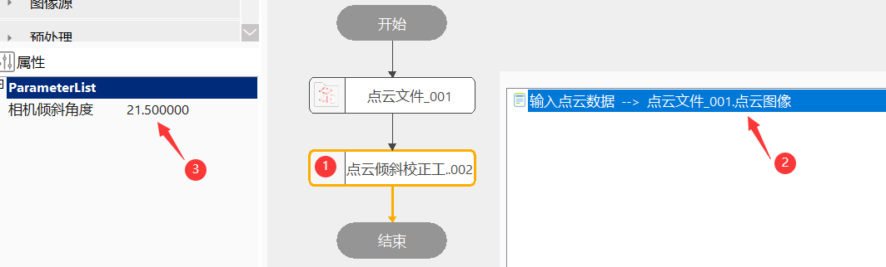

Công cụ hiệu chỉnh nghiêng đám mây điểm phù hợp với các tình huống như đo lường, kiểm tra 3D, công cụ hiệu chỉnh nghiêng đám mây điểm chủ yếu thực hiện chức năng hiệu chỉnh nghiêng dựa trên đám mây điểm đầu vào và góc lắp đặt camera.
Trong đo lường 3D, hiệu chỉnh nghiêng đám mây điểm được ứng dụng khá rộng rãi, ví dụ do nguyên nhân sản phẩm hoặc không gian lắp đặt, camera được lắp nghiêng theo một góc cố định, ảnh đám mây điểm chụp được cần được hiệu chỉnh trước rồi mới thực hiện phép đo tương ứng, tức ảnh đám mây điểm sau công cụ hiệu chỉnh nghiêng tương đương với hiệu quả ảnh chụp khi camera lắp ngang.
step1：Thêm file đám mây điểm, công cụ hiệu chỉnh nghiêng đám mây điểm, như trong Hình 3-1；
step2：Sau đó nhấp đúp để mở chuỗi tham số công cụ, liên kết file đám mây điểm；
step3：Nhập góc nghiêng của camera trong thanh thuộc tính, sau đó nhấp chạy để nhận được dữ liệu đám mây điểm sau khi hiệu chỉnh nghiêng；

| Tên tham số | Mô tả tham số |
|---|---|
| Dữ liệu đám mây điểm đầu vào | Nhập ảnh đám mây điểm cần hiệu chỉnh |
| Tên tham số | Mô tả tham số |
|---|---|
| Góc lắp đặt camera | Góc hiệu chỉnh nghiêng, phạm vi tham số [-360,360] |
| Tên tham số | Mô tả tham số |
|---|---|
| Dữ liệu đám mây điểm đầu ra | Xuất dữ liệu sau khi hiệu chỉnh nghiêng, dùng cho đo lường |
| Tên tham số | Mô tả tham số |
|---|---|
| Dữ liệu đám mây điểm đầu ra | Xuất dữ liệu sau khi hiệu chỉnh nghiêng, dùng cho đo lường |
| Thời gian thực thi | Thời gian thực thi công cụ |
| Kết quả thực thi | Kết quả thực thi công cụ |
Tham khảo “\Samples\3D\点云\点云倾斜校正工具.gvp”。